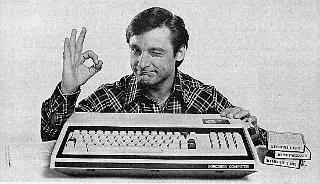

Using Playscii's Art Mode, you can create art and animation. If you see "Art Mode" in the top right corner of the Playscii application window, you're in Art Mode. This page covers all the things you can do in this mode.
Table of Contents
- Painting Basics
- Tile Character/Color/Transform
- Transparency
- the Picker
- Menu Bar
- Tools
- Tool Settings
- Panning and Zooming
- the Grid
- CRT Filter
- Working with Documents
- Cropping and Resizing
- Layers
- Animation and Frames
- Character Set Selector
- Color Palette Selector
- Importing and Exporting
- Image and Animation Export
- Bitmap Image Conversion
- Custom Character Sets
- Custom Color Palettes
- Technical Note: Indices
- Art Scripts: Making Art from Code
Painting Basics
A Playscii document is a grid of tiles called an Art. Each tile in an Art has a character, a foreground color, a background color, and a transform. Click and hold the primary mouse button, or Enter/Return, anywhere on a document to paint with the active character, color, and transform.
Tile Character/Color/Transform
Character and foreground/background color are pretty self-explanatory. "Transform" refers to whether a character is flipped (horizontally or vertically, aka the X and Y axes) or rotated (90, 180, or 270 degrees). The current active character, colors, and transform are always shown on the status bar along the bottom edge of the screen.
In this image, the 'A' character is selected, green is the foreground color, blue is the background color, and the transform is "normal", ie not flipped or rotated.
Transparency
In addition to the regular colors, the foreground and/or background color for a tile can also be transparent. Anything transparent shows through to whatever (if anything) is behind it. In Playscii's user interface, this special color is visually represented with a red X.
In this image, the '7' character is selected, green is the foreground color, the background is transparent, and the transform is "Flip X" ie flipped horizontally.
the Picker
Press and hold space bar to bring up the "picker" that lets you quickly select characters, colors, and transforms. Here's a diagram showing all the features of the picker:
- Character swatch - click a character here to set it as the active character for painting.
- Color swatch - click the primary mouse button on a color here to set it as the active foreground color, secondary mouse click to set it as the active background color.
- Transform selector - click one of the items here to set a different active transform (see transform section above).
- Tool/picker tabs - click the left tab to bring up settings for each tool (see Tools and Affects Masks sections below), click the right tab to bring up the picker view.
- Current character set - click this to bring up the character set selector.
- Current palette - click this to bring up the palette selector.
- Character swatch size - click the + and - buttons to change the character swatch's display size - bump it up if characters are too hard to see or click on your display.
If it's more comfortable for you to tap space bar rather than hold it, you can change that behavior with "Picker toggle key: press/hold" in the Tool menu.
Menu Bar
The menu bar along the top edge of the screen provides access to much of Playscii's functionality. Click a menu name to open it and select from the available commands. Many commands have an associated keyboard shortcut, displayed to the right of the menu entry.
Tools
You can pick the current tool from the Tool menu bar.
- Paint - change the tiles within the cursor area to the current active character/colors/transform.
- Erase - "erase" the tiles within the cursor area, removing characters and leaving only the current active background color.
- Rotate - rotate the tiles within the cursor area 90 degrees, relative to each character's current rotation.
- Grab - set the character/color/transform of the tile beneath the cursor as the current active character/color/transform. Secondary mouse button does this no matter what tool you have selected, so that you can very quickly sample what you need and continue painting.
- Text - click anywhere in the document to start entering alphanumeric text at that location. Press
Escapeto stop entering text. - Select - click and drag the mouse (or hold
Enter/Return+arrow keys) to define a selected area. Other tool operations will be restricted to the selection area, and you can also cut/copy the selected area and paint it with the Paste tool (see below). HoldingShiftwhile dragging a box adds to the current selection area, and holdingControlwhile dragging a box subtracts it from the current selection area. Holding neither mod key replaces any previous selection. - Paste - paint with the last cut/copied tiles.
Tool Settings
The Picker lets you change the settings for some tools:
- Brush Size - increase or decrease the size of the square area a tool affects. Doesn't apply to the grab, text, select, and paste tools.
- "Affects character / foreground color / background color / transform" masks - by default a tool will affect all of these things, but a tool's effect on each tile attribute can be disabled selectively. Hovering the cursor over a swatch will always preview the paint result, which might otherwise be a bit difficult to visualize.


Affects: all Affects: colors and transform, but not character Affects: BG color and transform, but not character and FG color Affects: only background color Affects: character and BG color, but not FG color and transform
Panning and Zooming
To zoom the view closer or further from the document you're editing, press Shift-X or Shift-Z respectively or scroll the mouse wheel up or down.
Pressing = or - will snap-zoom the view closer or further in "pixel exact" increments, which gives a 1:1, 2:2, 4:4 etc correspondance between what you're seeing and the pixel size of your character set. This can be useful if you intend to export images where exact dimensions are important.
To pan the view, use shift and the arrow keys or W/A/S/D (for up/left/down/right respectively), or click and drag the middle mouse button.
Pressing Z will center the view on your art and snap the view to a 1:1 pixel exact zoom level. Pressing Z again without moving the view will return it to its previous location. This is good for stepping back for a quick look at the overall piece while you're working on details.
You can also set the zoom level manually with "Set camera zoom..." in the View menu.
You can also tilt the camera with "Camera tilt" in the View menu, but this isn't useful for much and is a bit broken at the moment.
the Grid
By default Playscii display a light grid over your art showing the boundaries of each tile, but you can turn this off with "Grid" in the View menu.
CRT Filter
By default, Playscii displays your work with a screen effect that emulates the look of old TVs or Monitors, ie cathode ray tubes. You can disable this with "CRT filter" in the View menu, or pressing Shift-R. If Playscii runs slowly on your computer, try disabling the CRT filter.
| |
|
Working with Documents
You can save the current document, create a new document, and open a previously saved document from the File menu. You can have multiple documents open at the same time and switch between them by pressing Control-Tab, while Shift-Control-Tab cycles backwards through open documents.
You can also see a list of all open documents at the bottom of the Art menu.
Cropping and Resizing
You can crop a document by selecting an area with the Select tool and selecting "Crop to selection" from the Art menu.
You can resize a document with "Resize" from the Art menu. This opens a dialog where you can enter the new desired size. If the desired size is smaller than the current size, you can specify a tile to be the new top left corner in the "Crop Start X/Y" fields.
Layers
Playscii documents can have multiple layers, similar to Photoshop or GIMP. You can position these layers in 3D space for a parallax effect.
In the Layer menu, you can create a new blank layer with "Add layer" or duplicate an existing one with "Duplicate this layer". The dialog will ask you to enter a name for the layer (purely for ease of identification) and a "Z-depth", ie how far from the default base depth, you want the layer to appear at. The following two Layer menu items let you change these two respective values.
The "current active layer" is the one that your tools affect. You can cycle which layer is active with "Next layer" and "Previous layer", or with [ and ].
You can also select which layer is active in the layer list at the bottom of the Layer menu. The number of the current active layer is always shown in the status bar and corresponds to the order of this list.
When working on a particular layer, sometimes you want to see the other layers and sometimes you don't. "Inactive layers: Visible/Dim/Invisible" in the Layer menu cycles through three settings: all layers are 100% visible, non-active layers are dim but still partially visible, and non-active layers are completely hidden.
Animation and Frames
Playscii documents can be animated, with multiple frames that each display for a "hold time" before advancing to the next. For documents with more than one frame, animation playback can be started and paused in Art Mode with "Start/Stop animation playback" in the Frame menu, or P.
The "current active frame" is the one shown in the main editing view, that your tools affect. You can advance the currently active frame with "Next frame" and "Previous frame" in the Frame menu, or < and >.
In the Frame menu, you can create a new blank frame with "Add frame" or duplicate an existing one with "Duplicate this frame". The dialog will ask you to enter a hold time for the new frame, and an index - the number the new frame should be inserted at in the 1-to-N sequence. You can change a frame's hold time and sequence index with the subsequent Frame menu items. You can also set all frame hold times to be the same with "Change all frames' hold times".
Seeing the next and/or previous frames in the sequence, an "onion skin" view as it's called in traditional animation, can be a big help when animating. "Show onion skin frames", or O, toggles this off and on. In that same section of the Frame menu you can specify how many frames to show, as well as whether only previous frames, only next frames, or both are shown.
Character Set Selector
By default Playscii lets you paint with the Commodore 64 PETSCII character set, but it supports many other sets out of the box, and you can define your own. The character set selector lets you pick from the the available sets. Clicking the "Set" button in this selector changes the current document's character set. This change doesn't affect the character index numbers of your actual document, so it's safe to experiment with different sets.
Color Palette Selector
Similar to the character set selector, this selector lets you choose a different color palette from the default Commodore 64 palette. You can also define your own with nothing more than an image.
Importing and Exporting
New with version 0.9.0, Playscii has an Import/Export plugin system you can use to get images in and out of Playscii from other formats. For example, you can export your art into a standard image format for easy sharing, export animations in GIF format, convert bitmap images into ASCII, and import art that was originally created in other ASCII formats or even text files.
As it's a plugin system, you can also write your own converters. Playscii's built-in converters are stored in its formats/ subfolder, and you can place any you write in the formats/ subfolder of your Playscii documents folder. Weighing in at under 30 lines of code, the Plain Text Importer is a good example of how to get data from a very simple format into a Playscii art document.
Image and Animation Export
Playscii documents use a custom file format with a .PSCI extension which saves things like tile and layer data, but you may want to export your art as a conventional bitmap image. You can export the current active frame of the current document to a PNG format image with "Export" in the File menu and then selecting "PNG image". You'll then see an options screen allowing you to set the pixel dimensions of the output, and whether or not it uses the CRT filter.
You can also export animated documents in animated GIF format with "Export animated GIF" in the File menu. GIF image animation uses the same "frame hold time" concept that Playscii uses, so the resulting GIF should look the same as it does in Playscii.
Bitmap Image Conversion
Converting a Playscii document to a conventional bitmap image is very straightforward and preserves the image 100%, but doing the reverse is trickier and can have very aesthetically unique results.
|  | |
| |
|
With the "Bitmap image" importer under "Import" in the File menu, you can select a bitmap image in JPEG or PNG format to convert into Playscii using the current document character set. An options screen then lets you specify whether to use the current document's palette, or generate a new one from the source image (as with Palette from File), as well as define the dimensions of the new art document.
In brief, here's how the conversion process works: the source image is first resized to the current document size and its colors converted to the current palette. Each tile-sized block in the source image is then compared against all possible combinations of character and foreground/background color. When a best fit is found, that tile is painted at the source block's location and the next block is converted. This process is quite computationally intensive and may take a long time, even on fast computers. You can press Escape at any time to abort it.
The document size and color palette at the time of conversion have a big impact on the look of the final result, so you may want to experiment with different settings.
Custom Character Sets
Playscii includes several classic character sets from old computer systems, which you can preview and select in the Character Set Selector. You can also define custom character sets.
Character set data for Playscii consists of two files, placed together in the charsets/ subfolder in your Playscii documents folder: a PNG image file with the bitmap data of each character, and a text-based file with a .char extension that determines the mapping of characters to blocks in the image file. In this file, all lines that start with //, the double slash, are ignored so you can add comments as you like.
The first line of this file names the image file with the bitmap character data - if it's left blank, Playscii will look for the same filename but with a .png extension.
The second line of the file is the width and height of the character grid in the bitmap file, as integer numbers separated by a comma. Playscii needs this data to know how many pixels are in a tile for this character set.
All subsequent lines are "mapping" data, a 1:1 correspondance between the characters on each line and the blocks in the bitmap. If a block doesn't have a representative character you can type on a keyboard, just leave it a blank space, but keep track of the number of blank spaces.
As of Playscii 0.8.2, tiles can contain multiple colors, and the Ultima IV tile set is provided as an example of this. All pure black (RGB 0, 0, 0) pixels are treated as transparent, everything else is "tinted" by the foreground color, with pure white showing the tile pixels as-is.
If you have issues getting a custom character set to work, the character sets already included with Playscii are a useful reference. You can find them in the charsets/ subfolder of the folder you're running Playscii from. Here's the ZX Spectrum character set data as an example:
|
// ignore this speccy.png 16,4 " $:? ()><=+-*/;,.0123 456789ABCDEFGHIJ KLMNOPQRSTUVWXYZ // end |
||
| |
|
Lastly, know that if you're working on character set data or images in an external program such as a text or image editor, Playscii (as of version 0.9.2) will automatically reload changes as you save them.
Custom Color Palettes
Playscii includes several classic color palettes from old computers and game systems, which you can preview and select in the Palette Selector. You can also define custom color palettes in two different ways:
- You can simply drop an image into the palettes/ subfolder of your Playscii documents folder. The image is scanned from top left to bottom right, and each unique color found is added to the palette. You can create color swatch images in traditional paint programs for this purpose quite easily. As of version 0.9.0, Playscii will automatically reload palette images as you change them in another program.
- If you have an image with a larger number of unique colors, you can easily turn it into a custom palette with "Palette from image" in the Char/Color menu. After selecting a source image, the dialog lets you specify a name for the new palette file, and a target number of unique colors the source image will be reduced to.
Technical Note: Indices
While this is more likely to be of use to Game Mode authors it bears mentioning here: a tile's character, foreground and background color, and transform are all stored internally as an index, ie a positive integer number. A tile's character index corresponds with its character's position in the Art's character set, a tile's color indices correspond with its fg/bg colors' positions in the Art's color palette, and a tile's transform index corresponds to the UV_* enum values defined in the Art module: UV_NORMAL, UV_ROTATE90, UV_FLIPX, and so on.
You can see these indices stored in the JSON of a .PSCI file, and if you're handy with Playscii's developer console you can get and set the currently selected values with ui.selected_char, ui.selected_fg_color, ui.selected_bg_color, and ui.selected_xform.
Art Scripts: Making Art from Code
Playscii makes heavy use of Python's dynamic nature, so there are many ways besides the art tools described above to create art. You can peek and poke values at the current active art from the developer console, and you can also use something called Art Scripts to run arbitrary Python code on a given Art.
You can run an art script from the dev console with the scr command, and you can set an art script to run every N seconds with the screv command. You can also run them from Game Mode code with an Art's run_script and run_script_every methods.
Art scripts are kept in the artscripts/ subfolder of your Playscii documents folder, and have an .arsc file extension. Every line in an art script should be valid Python code - comment lines starting with # are fine.
An art script executes from within the Art's namespace, so referring to self from one refers to the Art itself. An iterator class called TileIter provides an easy way to iterate over all tiles in all frames and layers in an art, like so:
for frame, layer, x, y in TileIter(self):
self.set_char_index_at(frame, layer, x, y, random.randint(0, 64))
The above code sets every tile in the art to a random (indices 0 through 64) character.
There are a few art scripts included in the Playscii application folder. conway.arsc runs a variant of Conway's Game of Life on each tile in the art, dissolve.arsc does an odd dissolve-like effect, and so on. Some of these scripts were written early in Playscii's development and don't make use of TileIter, but if they did the code would be a bit simpler.
<< back to main documentation page